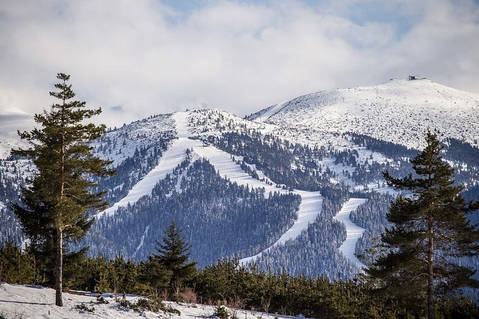
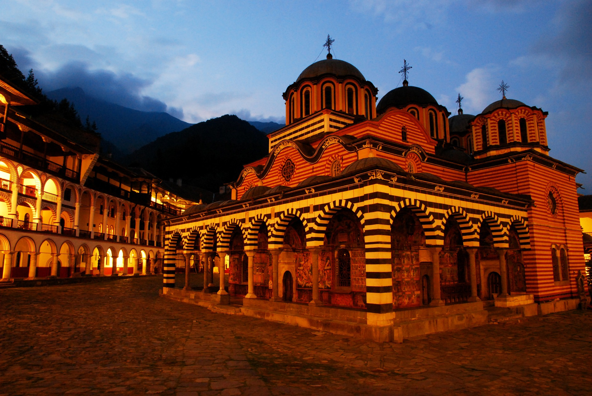
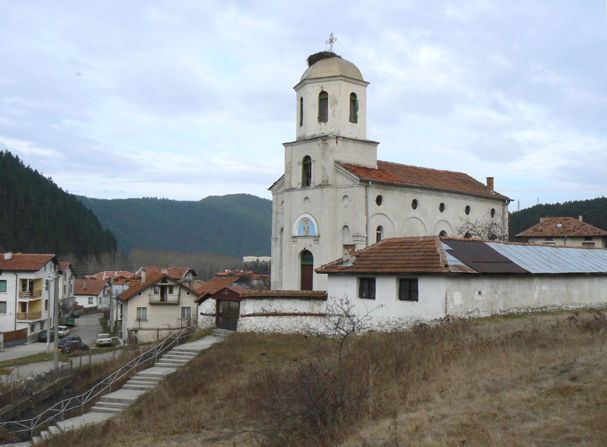
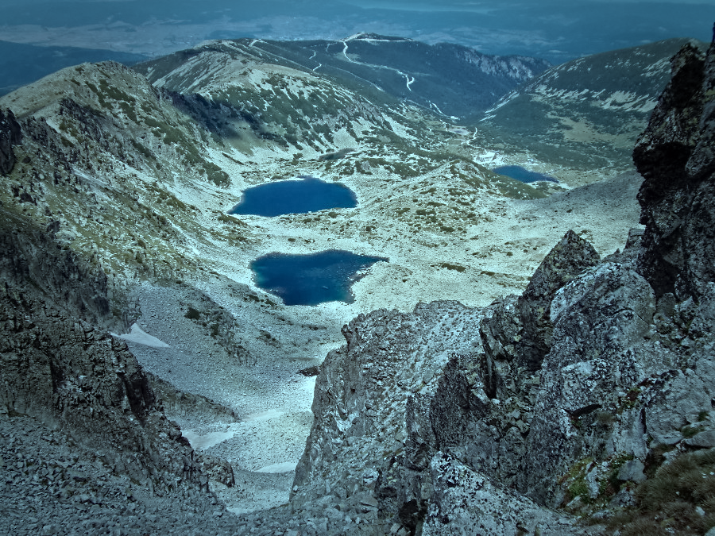
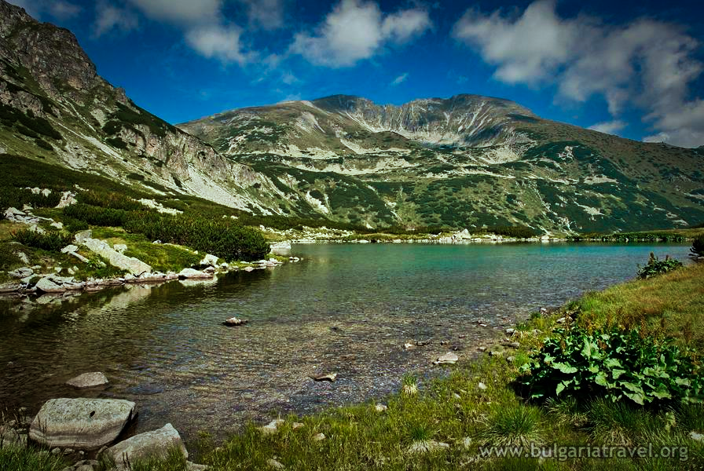
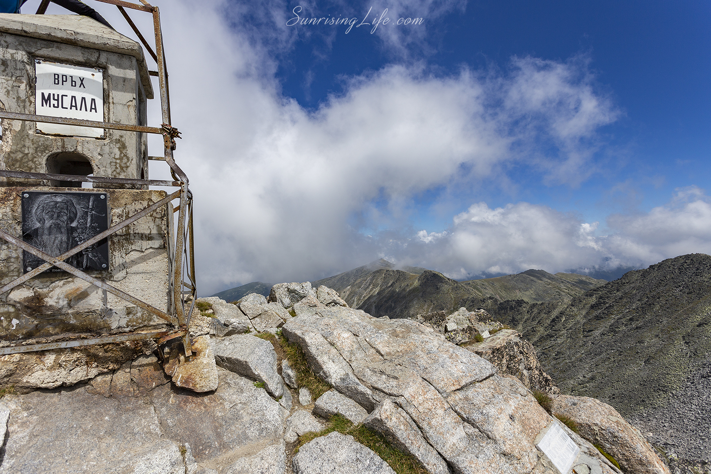

Назад

Боровец
Боровец (до 29 юни 1942 г. Чамкория) е първият курорт в България. Намира се в община Самоков, Софийска
област.

Рилски манастир
Рилският манастир е български ставропигиален манастир, един от най-значимите културни паметници в България,
символ на
страната,
включен в списъка за световното наследство на ЮНЕСКО.
Разположен е в Югозападна България, област Кюстендил, община Рила.
Основан е през Х век от св. Йоан Рилски Чудотворец в горното течение на Рилска река.
Светена вода
Параклисът „Св. Георги” е изографисан с чудни икони, там е изградена чешма „Светата чешма”, от която блика животворна
студена изворна вода,
обособени са кътчета за отдих и уединение. В неделния ден това чудно място отвори врати с благословението на патриарх
Неофит, предадено от Негово
преосвещенство епископ Поликарп, който направи тържествено освещаване на параклиса.

Свети Спас
Храмът „Св. възнесение Господне“, по-позната и днес носеща
името „Свети Спас“ в Маджаре е класифициран като архитектурно-строителна и художествена недвижима културна ценност от
Новото време
с категория от местно значение.

7-те Рилски Езера
Седемте рилски езера е група езера с ледников произход, разположена в планината Рила.
Това е най-посещаваната от туристи езерна група в България и е един от стоте национални туристически обекта. Езерата се
намират в Дамгския
дял на Северозападна Рила и са разположени стъпаловидно между 2095 и 2535 m н.в.
Заемат вдлъбнатини по склона на планината, като отделните езера са свързани помежду си чрез малки поточета.

Йончево езеро
Йончево езеро е разположено на 2013м надморкса височина, под връх Попова капа. Езерото е кръстено на самоковския
художник Христо Йончев-Крискарец.
Запален турист, той е прекарвал по цяло лято със семейството си в Рила. Езерото е известно с наличието на пъстърви.
Пътеката за Йончево езеро започва непосредствено зад сградата на хотел Малъовица.
След стръмно изкачване в рядка борова гора излизаме на ски пистата Ръждавица.

Мусаленски езера
Мусалeнските езера (от 14 март 1950 г. до 19 януари 1962 г. Ста?лински езера)
са група от седем езера, разположени стъпалообразно в Мусаленския циркус на височина от 2709 m до 2322 m и принадлежащи
към
басейна на река Боровецка Бистрица (Мусаленска Бистрица).

връх Мусала
Мусалa (с предишно име Сталин – от 14 март 1950 г. до 19 януари 1962 г.) е най-високият планински връх в България и на
целия Балкански полуостров.
Надморската височина на връх Мусала е 2925,4 m, измерена от равнището на пристанище Варна.
По-висок е с 8 m от връх Митикас в планината Олимп (Гърция) и с 11 m от връх
Вихрен в планината Пирин (България). Мусала има относителна надморска височина от 2473 m, което го подрежда на 7-о място
в Европа.
Мальовица
Мальoвица е името на връх в северозападната част на планина Рила, висок 2729 m. Името на върха е свързано с Мальо
войвода – борец срещу поробителите,
загинал според преданието нейде в Мальовишката долина. Друго предположение е, че името произлиза от Малите езера, както
планинците наричат езерата
в североизточното подножие на върха. На най-старите карти върхът е отбелязан с името Малевица.

Девически манастир
Девическият манастир в Самоков започва своя живот около 1772 година като малко девическо монашеско общежитие.
Основано е от баба Фота, която подарява имотите си на Рилския манастир, а в собствената си къща обединява малобройна
девическа общност.
Назад